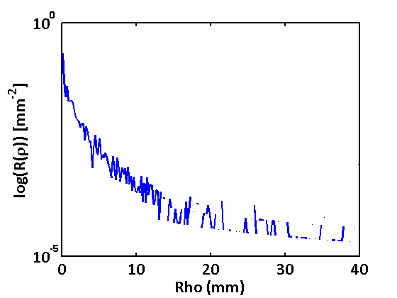

Contents
Monte Carlo Demo
Script for demoing use of VTS Monte Carlo tools within Matlab
clear all clc startup(); % ======================================================================= %
Example 1: run a simple Monte Carlo simulation with 1000 photons
% create a default set of inputs si = SimulationInput(); % modify number of photons si.N = 1000; % specify a single R(rho) detector by the endpoints of rho bins si.DetectorInputs = { DetectorInput.ROfRho(linspace(0,40,201)) }; % use this to run a Matlab-wrapped MonteCarloSimulation using static method output = VtsMonteCarlo.RunSimulation(si); % more work to do on making outputs friendly, but it's working :) d = output.Detectors(output.DetectorNames{1}); figure; semilogy(d.Rho, d.Mean); ylabel('log(R(\rho)) [mm^-^2]'); xlabel('Rho (mm)'); % ======================================================================= %
Running simulation... Simulation complete! Run time: 12.7872 seconds
Example 2: run Monte Carlo simulations for two absorption weighting types
with 1000 photons each and compare computation time
% create a default set of inputs si = SimulationInput(); % specify a single R(rho) detector by the endpoints of rho bins si.DetectorInputs = { DetectorInput.ROfRho(linspace(0,40,201)) }; si.Options.AbsorptionWeightingType = 'Continuous'; % use this to run a Matlab-wrapped MonteCarloSimulation using static method output1 = VtsMonteCarlo.RunSimulation(si); si.Options.AbsorptionWeightingType = 'Discrete'; % use this to run a Matlab-wrapped MonteCarloSimulation using static method output2 = VtsMonteCarlo.RunSimulation(si); % ======================================================================= %
Running simulation... Simulation complete! Run time: 1.3953 seconds Running simulation... Simulation complete! Run time: 0.80279 seconds
Example 3: run a Monte Carlo simulation with a fully-customized input
(values used here are the class defaults)
% 1) define a source... % create a new 'instance' of the DirectionalPointSourceInput class sourceInput = DirectionalPointSourceInput(); % Point source type sourceInput.SourceType = 'DirectionalPoint'; % dc - this shouldn't be necesary...look at detector inputs % New position sourceInput.PointLocation = [0 0 0]; % Point source emitting direction sourceInput.Direction = [0 0 1]; % Initial tissue region index sourceInput.InitialTissueRegionIndex = 0; % 2) define a tissue... % create a new 'instance' of the MultiLayerTissueInput class tissueInput = MultiLayerTissueInput(); % assign the tissue layer regions struct tissueInput.LayerRegions = struct(... 'ZRange', ... {... [-Inf, 0], ... % air "z" range [0, 100], ... % tissue "z" range [100, +Inf] ... % air "z" range }, ... 'RegionOP', ... {... [0.0, 1e-10, 1.0, 1.0], ... % air optical properties [0.0, 1.0, 0.8, 1.4], ... % tissue optical properties [0.0, 1e-10, 1.0, 1.0] ... % air optical properties } ... ); % 3) specify one or more detector geometries to tally... detectorInputs = {... DetectorInput.ROfRho(linspace(0,40,201))... % specifies endpoints of rho bins }; % 4) set all options... % creates a new 'instance' of the SimulationOptions class options = SimulationOptions(); % seed of random number generator (-1=randomly selected seed, >=0 reproducible sequence) options.Seed = -1; % random number generator type options.RandomNumberGeneratorType = 'MersenneTwister'; % absorption weighting type options.AbsorptionWeightingType = 'Discrete'; % phase function type options.PhaseFunctionType = 'HenyeyGreenstein'; % list of databases to be written options.Databases = {}; % flag indicating whether to tally second moment information for error results options.TallySecondMoment = 1; % flag indicating whether to track statistics about where photon ends up options.TrackStatistics = 0; % photon weight threshold to perform Russian Roulette. Default = 0 means no RR performed. options.RussianRouletteWeightThreshold = 0; % simulation index options.SimulationIndex = 0; % finally, create a new 'instance' of the SimulationInput class input = SimulationInput(); % number of photons input.N = 100; % name of output folder (if being written to file) input.OutputName = 'results'; % assign source, tissue, and detector above to our input class input.SourceInput = sourceInput; input.TissueInput = tissueInput; input.DetectorInputs = detectorInputs; input.Options = options; output = VtsMonteCarlo.RunSimulation(input); % ======================================================================= % % Example 4: run a Monte Carlo simulation with post-processing enabled, and % compare on-the-fly results with post-processing
Running simulation... Simulation complete! Run time: 1.7916 seconds